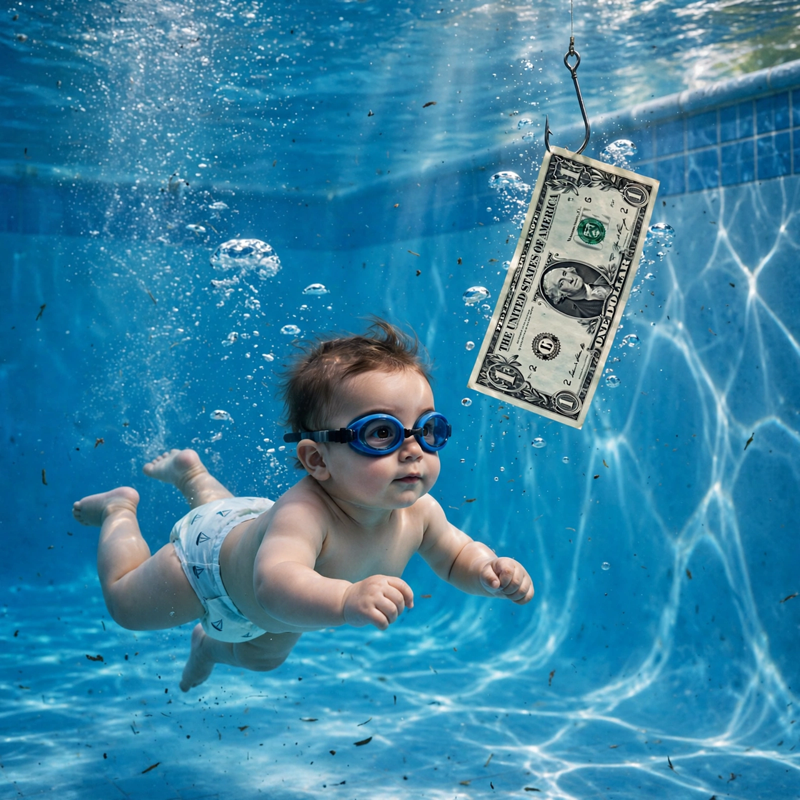

| Nevermind | |
|---|---|
 | |
| Artist | Nirvana |
| Released | 24 September 1991 |
| Studio | Sound City, Van Nuys; Smart, Madison |
| Genre | Grunge, alternative rock |
| Length | 42:36 |
| Label | DGC |
| Producer | Butch Vig |
Nevermind is the second studio album by the American rock band Nirvana, released on September 24, 1991, by DGC Records. It was Nirvana's first release on a major label and the first to feature drummer Dave Grohl. Produced by Butch Vig, the album is credited with bringing alternative rock and grunge into the mainstream, and its lead single "Smells Like Teen Spirit" became an anthem for Generation X.
The album's cover, photographed by Kirk Weddle, shows a naked baby — four-month-old Spencer Elden — swimming after a US dollar bill on a fishhook. Nevermind displaced Michael Jackson's Dangerous at number one on the Billboard 200 in January 1992 and has sold more than 30 million copies worldwide.
After the independent album Bleach (1989) on Sub Pop, Nirvana signed to DGC. Early sessions with Vig at Smart Studios in Madison, Wisconsin produced demos; the album was recorded mainly at Sound City Studios in Van Nuys, California, in May and June 1991, on a budget of $65,000. Kurt Cobain's songwriting combined quiet verses with loud, heavy choruses, drawing on the Pixies, the Melvins and R.E.M.
1. "Smells Like Teen Spirit" · 2. "In Bloom" · 3. "Come as You Are" · 4. "Breed" · 5. "Lithium" · 6. "Polly" · 7. "Territorial Pissings" · 8. "Drain You" · 9. "Lounge Act" · 10. "Stay Away" · 11. "On a Plain" · 12. "Something in the Way" (with hidden track "Endless, Nameless").
Nevermind is routinely ranked among the greatest albums of all time; the Library of Congress added it to the National Recording Registry in 2004. Its success effectively ended the commercial dominance of 1980s glam metal and opened the charts to bands such as Pearl Jam and Soundgarden.
Nirvana · In Utero · Grunge · Pacific Northwest
From Wikipedia, the free encyclopedia (recreated from memory).